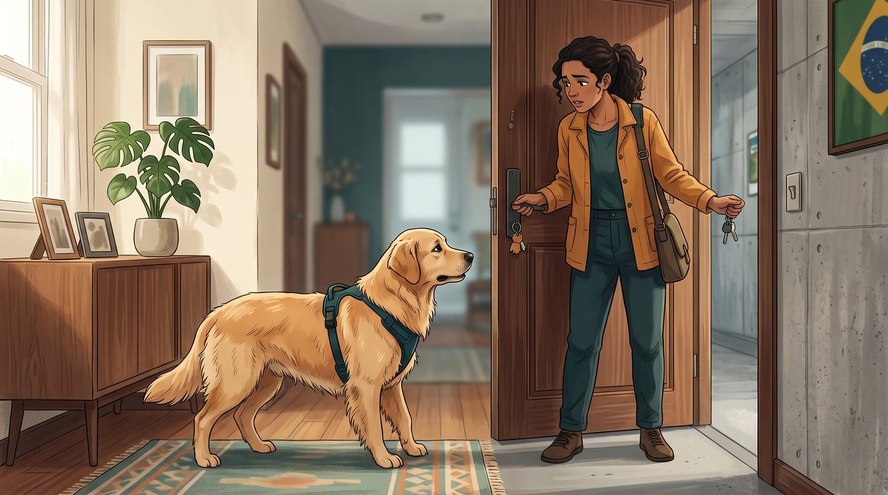
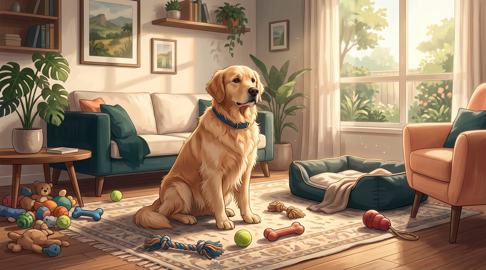
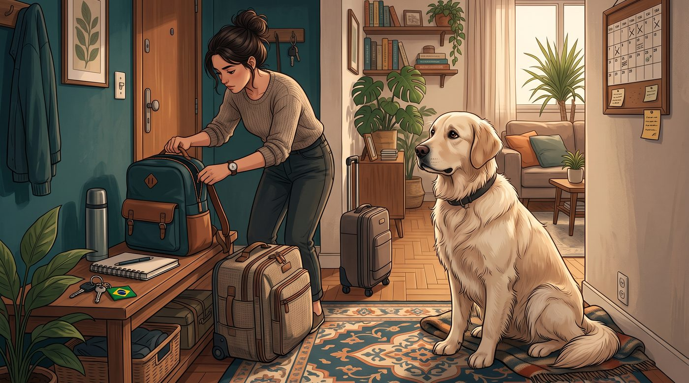
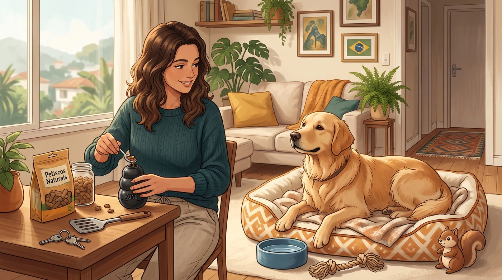
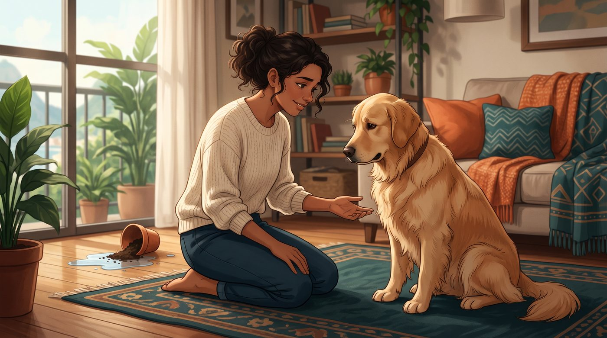
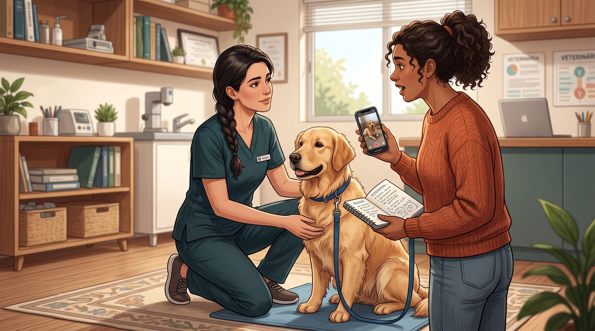

Ele segue você pela casa inteira, chora quando você sai e parece não conseguir ficar sozinho? Nem todo cachorro que gosta de estar perto do tutor tem ansiedade de separação. Mas alguns sinais merecem atenção.
1. Gostar de ficar perto não significa ter ansiedade
Muitos cães acompanham seus tutores pela casa, deitam perto do sofá e ficam animados quando percebem que alguém vai sair.
Esse comportamento, por si só, não significa que exista um problema.
Alguns cães simplesmente gostam de companhia. Outros aprenderam que seguir o tutor costuma resultar em carinho, brincadeiras ou acesso a alguma atividade interessante.
A ansiedade de separação é diferente. Nesse caso, o cachorro apresenta sofrimento relacionado à ausência ou à possibilidade de ficar separado de uma pessoa importante.
A diferença não está apenas em querer companhia, mas em como o animal reage quando essa companhia desaparece.
2. O que acontece quando você sai?

Imagine a seguinte situação: você pega as chaves, coloca os sapatos e se prepara para sair.
Seu cachorro começa a andar de um lado para o outro, choramingar, latir ou tentar impedir que você vá embora.
Depois que a porta se fecha, ele pode continuar vocalizando, arranhar a porta, destruir objetos ou até fazer necessidades dentro de casa.
Esses comportamentos podem estar relacionados à ansiedade de separação, principalmente quando aparecem durante a ausência do tutor e não apenas por alguns minutos de excitação antes da saída.
Entre os sinais mais comuns estão:
- Latidos ou uivos persistentes
- Andar repetidamente pela casa
- Ofegar ou babar excessivamente
- Tentar escapar por portas e janelas
- Destruir objetos próximos às saídas
- Urinar ou defecar quando fica sozinho
- Demonstrar agitação intensa
- Ter dificuldade para se acalmar
Nem todos os cães apresentam todos esses sinais. A intensidade também pode variar bastante.
3. Como diferenciar ansiedade de tédio?

Essa é uma dúvida muito importante.
Um cachorro entediado pode procurar algo para fazer quando fica sozinho. Ele pode mastigar um objeto, mexer no lixo ou explorar a casa.
Já um cachorro com ansiedade de separação geralmente demonstra sofrimento, e não apenas falta de atividade.
Por exemplo:
- Um cão entediado pode brincar com um brinquedo e depois descansar
- Um cão ansioso pode ignorar brinquedos e permanecer inquieto
- Um cão entediado pode destruir objetos em diferentes momentos
- Um cão com ansiedade pode concentrar a destruição em portas, janelas ou objetos que tenham o cheiro do tutor
Ainda assim, somente observar uma bagunça ao chegar em casa não é suficiente para identificar a causa.
Filhotes podem destruir objetos durante a exploração e a troca de dentes. Alguns cães também reagem a barulhos externos, confinamento, medo ou falta de treinamento. Por isso, é importante investigar o contexto antes de concluir que se trata de ansiedade de separação.
4. Mudanças na rotina podem desencadear o problema

Um cachorro que estava acostumado a ter alguém em casa o dia inteiro pode sofrer quando a rotina muda.
Isso pode acontecer depois de:
- Mudança de trabalho
- Retorno às aulas
- Mudança de residência
- Viagem ou ausência prolongada
- Perda de uma pessoa ou animal da família
- Alteração importante nos horários
- Período de convivência intensa seguido de muitas horas sozinho
Mas isso não significa que a ansiedade de separação aconteça apenas após mudanças. Ela pode surgir em diferentes momentos da vida e em cães com histórias muito variadas.
Também é importante não culpar o tutor. A ansiedade é um problema comportamental complexo, que pode envolver experiências anteriores, predisposição individual, ambiente e aprendizagem.
5. O que você pode fazer para ajudar?

O primeiro passo é evitar que a saída de casa se transforme em um acontecimento assustador.
Tente criar uma rotina previsível, com momentos de passeio, alimentação, descanso e interação. Atividades adequadas antes da ausência podem ajudar o cão a lidar melhor com o período sozinho.
Algumas medidas úteis incluem:
- Oferecer um ambiente seguro e confortável
- Deixar brinquedos apropriados e atividades de enriquecimento
- Ensinar o cachorro a relaxar em um local próprio
- Praticar pequenas ausências de maneira gradual
- Evitar despedidas excessivamente dramáticas
- Manter os retornos tranquilos
- Recompensar comportamentos calmos
- Garantir exercício e estímulo mental adequados
O treinamento deve respeitar o limite do animal. Se ele entra em pânico mesmo após poucos segundos sozinho, aumentar o tempo de ausência de forma rápida pode piorar o sofrimento.
Em casos mais intensos, o tratamento pode envolver um plano individualizado de modificação comportamental e, quando necessário, medicamentos prescritos por um veterinário.
6. O que você nunca deve fazer

Quando o tutor encontra a casa destruída, é compreensível sentir frustração. Mas punir o cachorro depois da ocorrência não ensina o comportamento correto.
O animal dificilmente relacionará uma bronca recebida na sua chegada com algo que fez muitos minutos antes.
Além disso, a punição pode aumentar o medo e a insegurança, tornando as próximas ausências ainda mais difíceis.
Evite também:
- Gritar com o cachorro
- Bater ou assustá-lo
- Prendê-lo repentinamente como castigo
- Forçá-lo a ficar sozinho por longos períodos
- Usar coleiras ou métodos aversivos
- Ignorar sinais intensos de pânico
- Administrar calmantes por conta própria
A orientação veterinária e o treinamento baseado em reforço positivo são caminhos mais seguros para lidar com problemas de ansiedade.
7. Quando procurar ajuda profissional?

Se o cachorro apresenta apenas um leve desconforto quando você sai, mudanças graduais na rotina podem ajudar.
Mas procure orientação veterinária ou de um profissional qualificado em comportamento se ele:
- Entra em pânico quando percebe que você vai sair
- Tenta escapar e pode se machucar
- Destrói portas, janelas ou grades
- Late ou uiva durante longos períodos
- Apresenta vômitos, diarreia ou perda de apetite
- Urina ou defeca repetidamente apenas quando está sozinho
- Não consegue relaxar mesmo com treinamento
- Apresenta uma mudança súbita de comportamento
Uma gravação feita por celular ou câmera de segurança pode ser muito útil. Muitas vezes, o tutor não sabe exatamente o que acontece depois que fecha a porta.
O vídeo pode ajudar o profissional a diferenciar ansiedade de separação de tédio, medo de barulhos, ansiedade de confinamento ou outras causas.
Seu cachorro sente sua falta — mas não precisa sofrer por isso
É natural que um cachorro queira estar perto de quem ama. A convivência cria vínculos, rotina e segurança.
Mas existe uma diferença entre sentir saudade e entrar em sofrimento quando fica sozinho.
Se o seu cão apenas acompanha você pela casa, isso pode ser parte da personalidade dele. Se ele demonstra pânico, destrói objetos tentando escapar ou não consegue se acalmar durante sua ausência, vale investigar.
O objetivo não é fazer o cachorro deixar de gostar da sua companhia. É ajudá-lo a descobrir que também pode se sentir seguro quando você não está por perto.
Este conteúdo é educativo e não substitui uma avaliação veterinária. Se o seu cachorro apresentar sofrimento intenso, tentativas de fuga, automutilação ou mudanças repentinas de comportamento, procure atendimento profissional.
Fontes e referências
- Behavior Problems of Dogs — Merck Veterinary Manual
- Separation Anxiety — ASPCA
- Helping Your Pet With Separation Anxiety — Texas A&M University
- Separation, Confinement, or Noises: What Is Scaring That Dog? — PubMed
- How to Tell If Your Dog Has Separation Anxiety — American Veterinary Society of Animal Behavior